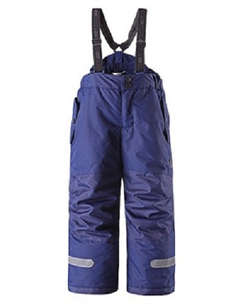

VitaLina+


Lassie детские зимние штаны на подтяжках, тёмно-синие 134
ВЫГОДНОЕ ПРЕДЛОЖЕНИЕ 39,95
• Описание товара
Тёплые детские зимние штаны на подтяжках отлично подойдут для нашего климата, так как они изготовлены из водонепроницаемого и дышащего материала. Ваш ребёнок может спокойно играть в снегу, потому что штаны прочные и износостойкие. У штанов имеется два кармана на кнопке и крепления спереди. Съемные подтяжки и защита от снега (резинка). Светоотражающие детали обеспечат видимость в темноте. Комплект можно сушить в сушильной машине. Температурный режим - от 0С ... -20C Воздухопроницаемость 3 000 г/м², водонепроницаемость 3 000 мм Материал: 100% полиэстер Lassie - производитель верхней одежды для детей. Это красивая, практичная и функциональная детская одежда и аксессуары. При любых капризах климата одежда Lassie обеспечит комфорт и защитит вашего ребёнка от ветра и холода. Одежда Lassie поможет отлично чувствовать себя в любую погоду.